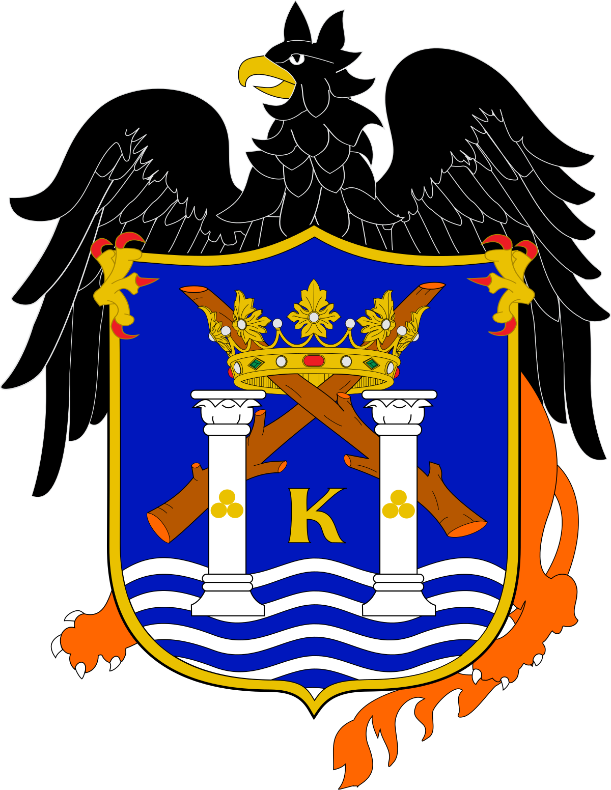
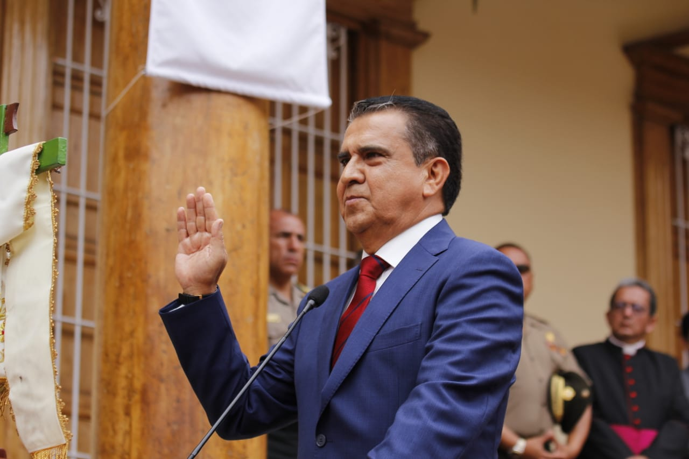

<b>TRUJILLO</b>
TRUJILLO
Trujillo es una ciudad del noroeste de Perú. Es conocida por la danza tradicional del país, la marinera. El centro colonial alberga la gran Catedral de Trujillo, con su fachada amarilla brillante y la Casa Urquiaga de color azul. En las cercanías, se encuentra el Palacio Iturregui de estilo neoclásico con estatuas de mármol italianas y un patio. Al oeste de la ciudad, el enorme complejo de adobe de Chan Chan es una ciudad abandonada que alguna vez fue el hogar del antiguo Reino chimú.
ESCUDO

GOBERNADOR REGIONAL
FOTO DEL GOBERNADOR

MANUEL FELIPE LLEMPÉN CORONEL
DESCRIPCION
Nació en Chongoyape, provincia de Chiclayo, Perú, el 6 de julio de 1950, hijo de Salvador Llempén Saldaña y Livia Coronel Gonzales. Cursó sus estudios primarios y secundarios en su localidad natal. Entre 1969 y 1974 realizó estudios de Ingeniería Química en la Universidad Nacional de Trujillo y, entre 1987 y 1988 cursó la maestría en administración de empresas.Fue presidente ejecutivo de la Corporación Salud Universal S.A.C entre el 2016-2018. Como funcionario público ocupó el cargo de Presidente del Consejo Consultivo Chavimochic entre el 2015-20183 y en el Gobierno Regional de La Libertad fue gerente general entre el 2015-2016 durante la gestión de César Acuña y Luis Valdéz Farías como presidentes regionales.Como político ocupó el cargo de Responsable Político Región La Libertad del Partido Político Alianza Para El Progreso en el 2018 En el 2018 fue elegido gobernador de la región de La Libertad.
PROVINCIAS Y DISTRITOS
PROVINCIAS
- El Porvenir
- Florencia de Mora
- Huanchaco
- La Esperanza
- Laredo
- Moche
- Poroto
- Salaverry
- Simbal
- Trujillo
- Víctor Larco Herrera
DISTRITOS
- Florencia de Mora
- La Esperanza
- victor Larco Herrera
- El Porvenir
- Moche
- Laredo
- Huanchaco
- Salaverry
- Simbal
- Santiago de Cao
- Poroto
- Chicama
- Magdalena de Cao
- Chocope
- La Cuesta
- Sinsicap
- Paranday
- Casa Grande
- Ascope
- Viru
- Carabamba
PAGINAS A VISITAR
VISITA:REGION LA LIBERTAD
VISITA:DISTRITOS DE TRUJILLO
VISITA:TWITTER DE TRUJILLO
BREVE DESCRIPCION DE TRUJILLO